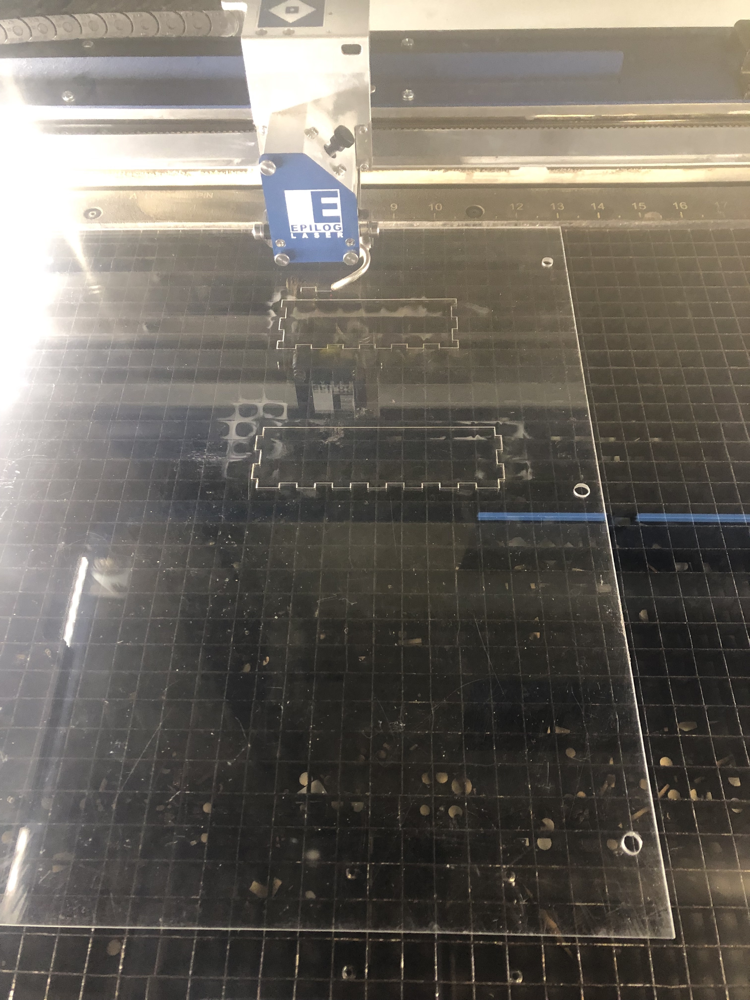

Final Project: Sheet Mask Box

Objective
The object of this project was to put together a multi-layer sheetmask/small cosmetic storage box
that open and shuts. My goal was to use 3D printing, CAD modeling, stock parts and laser cutting. The inspiration
for this project were Kaboodles.

Overall, I accomplished my goal and successfully put together my box.
Final Project
My project consists of two boxes laser cut out of acrylic and pressed fit together. The boxes are stacked one on top of the other
and are connected by linkages. You slide open the top box to access the second box. The top box has a lid that snaps into place.

Reasoning Behind Box Design
For the top box to serve as the bottom box's lid, I wanted a flat edge box. The top box would also need to have a
flat edge and have to be open so I can put items into it. Since I've only ever designed closed boxes, I used a box generator to get an idea of
how to make this box and then proceeded to make the vector box design on Illustrator.
Reasoning Behind Box Movement
To replicate how traditional makeup boxes move, the movement had to go as an arc to go up and then slide back.
Methods
3D Printing: Linkages and Lid
Laser Cutting: Box Pieces
CAD Modeling: Linkages and Lid
Stock Parts
Mechanical Design
Materials
Acrylic
PLA Filament
Rivets
Process
1. Illustrator vector box: Create one large rectangle to be the bottom of the box. The width and height of the rectangle
determine the size the box will be. Create 2 different sets of rectangles (male and female) to make the sides of the box.
The female pieces are equal to the width of the bottom rectangle and the height determine the depth of the box.
The male pieces are equal to the height of the bottom rectangle and the height should match the height of the female pieces
Final measurements for this project: Bottom rectangle: 6 inches x 5 inches. Female pieces: 6 in x 1.5 inches. Male pieces: 5 inches by 1.5 inches.
2. Creating the teeth and slots of the box: To make a flat edge box, the female pieces need to have corners that create an angle
so the edges of the boxes are flush with the male pieces.
Female Parts: For the female parts make slots whose depth match the thickness of the material. For this project, I used acrylic so
the material was 1/8th of an inch. To create the slots, I created 2 small boxes that intersect by 1/8th of an inch with the larger rectangle along the Y
side of the rectangle. I placed both boxed leaving room at the top and bottom and made sure they were equal distances from each other. Then place
additional boxes that intersect by 1/8th of an inch along the X side of the box and used the Horizontal Distribute Space tool in Illustrator to distrubute the objects more precisecly
along the X side of the rectangle.
Male Parts: For the male parts make boxes that protude from the rectangle, their distance should equal the thickness of the material. For this project, I used acrylic so
the material was 1/8th of an inch. To create the slots, I created 2 small boxes that protude by 1/8th of an inch with the larger rectangle along the Y
side of the rectangle. I placed both boxes leaving room at the top and bottom and made sure they were equal distances from each other. Then place
additional boxes that protude by 1/8th of an inch along the X side of the box and used the Horizontal Distribute Space tool in Illustrator to distrubute the objects more precisecly
along the X side of the rectangle.
Once all of the boxes were created, use the Path Creator Tool (Minus Front) to finalize
the shapes.
Create two sets of these pieces.
Total Pieces: 8; Female Part Slot Dimensions: 1/8 inch deep, .3 inch wide; Male Part Teeth: 1/8 inch in height, .3 inch wide.
3. Creating holes for rivets: To create the holes for the rivets, use calibers to get the width of the rivet and creat 2 holes with a radius that match
that width of the rivet. Align the two holes about an inch away from each other. These holes should be places on the female parts. Use the mirror tool to replicate the holes on the second set of female parts so the second
set of holes would be
angled from each other.
2 holes, final Hole radius: .273. The holes were set 1.25 inches away from each other
4. Lasercutting parts: To prepare for laser cutting, set the offset to .003 inches to account for the thickness of the laser.
After I set the offset, laser cut the pieces on desired material (in this case acrylic). After the parts were laser cut, put together the boxes.
Laser Cutter Setting for Acrylic: 8 Speed, 100 Frequency, 100 Power
5. Creating Linkages: After the boxes were cut and put together, measure the distance between the holes for the rivets. This distance determins how
far away from each other the linkage holes would have to be. Once I had that measurement, create two rectangles on Rhino and use the Filet tool
to round the corners. Add the holes that have the same radius as the rivet and place them at the same distance as the holes on the female parts. Extrude the
pieces to a distance that's equal to the thickness of the material.
Linkage measurements: 1.5 in x .25 in height; Linkage Holes: .27 radius set at 1.15 inches away from each other.
6. 3D Printing Linkages: Export the pieces as an STL and 3D print the linkages using PLA filament.
3D printer settings: 230 C, Time to Print 4 pieces: 1 hour.

7. Creating the lid: Create the lid on Rhino. Measure the outside of the top box and created a rectangle
that matched the horizontal and vertical side of the box. Create another rectangle that is .25 inches bigger than the first box. Extrude
both rectangles to 1/8 of an inch to match the thickness of the acrylic and use Boolean Differnce on the larger box to create
the lid. 3D print the lid and snap into place with the top box.
3D printer settings: 230 C, Time to Print lid: 2.5 hours

8. Mechanical Design: Use the linkages and the rivets to connect the two boxes together. Once everything is connected together,
the top box slides back in an arc movement to access the second box.
Iteration 1
The first iteration was smaller than I anticipated it to be, so I had to recut the parts to make them slightly bigger. The
biggest issue with the first iteration was that when I opened moved the top box, it didn't sit flush to the bottom box. The
top box hung at a weird angle. Leo pointed out that the hole was too big (originally .3 inches) so I reduced it to the finalized
size of .27 inches. This created a tighter fit and more resistance for the linkage. The box did not hang for the second iteration.


Issues
The biggest issue I had with this project was the CAD model assemble in OnShape. I decided that since the overall
design and movement was fairly simple, I could just test it once I had the physical parts laser cut and printed for the
sake of time. I switched to creating the linkages and the lid on Rhino and the box pieces through vectors in Illustrator.
My biggest constraint was time, I wanted to make the CAD assembly work to test digitally but was spending way too much time on it
and I decided to test it the old school way.
Source Files, Specs and Peer Attributions
Rhino Files for Linkages here
Rhino Files for Lid here
Illustrator Files for box here
Peer credit to Leo and Julia for helping me figure out dimensions for the holes on the female parts.